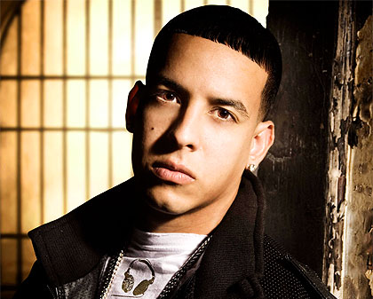
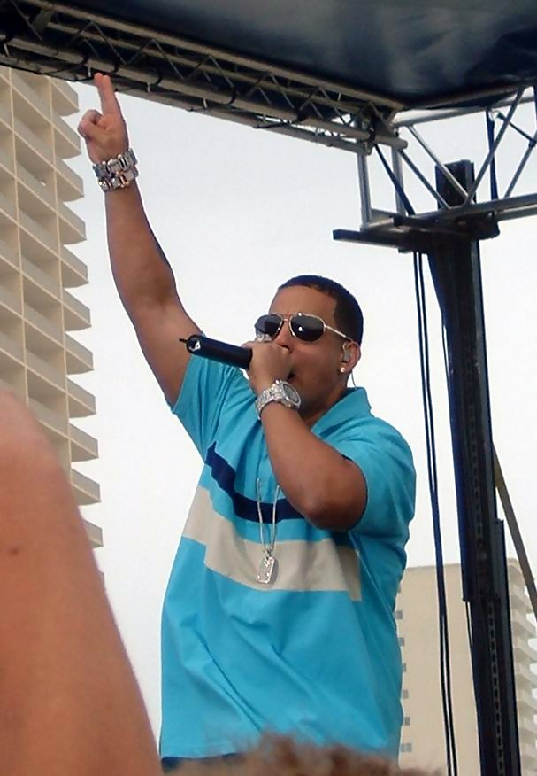

Regueton
Daddy Yankee

Ramónnota Luis Ayala Rodríguez (San Juan, 3 de febrero de 1977), conocido como Daddy Yankee, es un cantante, actor, productor cinematográfico, locutor de radio,y empresario puertorriqueño.
Diversos sectores de la crítica le consideran «El Rey del Reguetón», y uno de los artistas más respetados e influyentes del género,mientras que el portal estadounidense Allmusic afirma que el cantante puertorriqueño «ayudó a establecer el reguetón como un estilo de música durante el siglo XXI».
Poderes y habilidades
Información artística
Género(s) Reggaeton, Rap, Hip Hop, perreo, dancehall, merengue, mambo, soca, vallenato, pop latino, samba, baladas[cita requerida]
Instrumento(s) Voz, batería, piano, guitarra
Período de actividad 1988-actualidad

Datos
generales
Nombre real Ramón Luis Ayala Rodríguez7
Nacimiento 3 de febrero de 1977 (40 años)
Origen Bandera de Puerto Rico San Juan, Puerto Rico
Nacionalidad Bandera de Puerto Rico
Cónyuge Mireddys González1 (1994-Presente)
Hijos
Ver lista[mostrar]
Ocupación Cantante, actor, productor discográfico, ejecutivo, locutor, filántropo, empresario.
Regresar